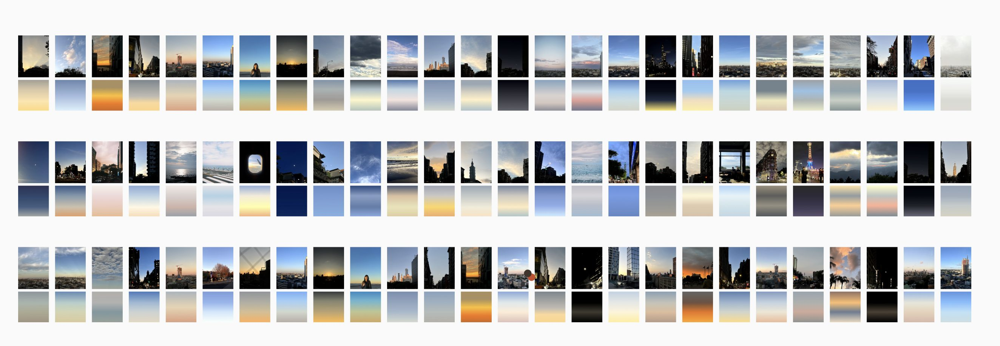

Process
How a sky becomes a sticker.
Every sky went through four steps: the photo, its colors, the feeling, and a shape. Scroll sideways to follow along.
01Collect and extract

75 skies from 2024. Under each photo, the four colors I picked from it, stacked into a gradient.
>
>
>
02Sketch the pages

Early ideas: a gradient that fills the screen, day turning into night, Taipei next to New York.
03Give each feeling a shape

One shape per feeling, like stickers I could paste into the diary.
04Diary as the medium

References for the feel: quiet paper, short notes, and things pasted in.
See the moods →